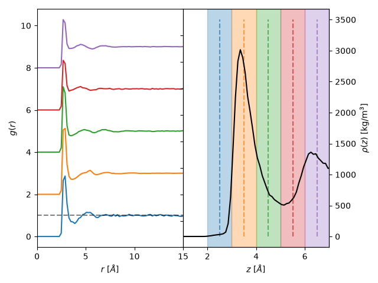

Note
Go to the end to download the full example code.
Pair distribution functions¶
Basic usage¶
In the following example, we will show how to calculate the two-dimensional planar pair distribution functions.
In the following, we will give an example of a trajectory of water confined by graphene
sheets simulated via GROMACS. We assume that the GROMACS topology is given by
graphene_water.tpr and the trajectory is given by graphene_water.xtc. Both can
be downloaded under topology and trajectory, respectively.
From these files you can create a MDAnalysis universe object.
We begin by importing the necessary modules.
import matplotlib.pyplot as plt
import MDAnalysis as mda
import numpy as np
import maicos
Next, we proceed with the creation of a MDAnalysis universe object, from which we further select the water molecules using the resname selector.
u = mda.Universe("./graphene_water.tpr", "graphene_water.xtc")
This universe object can then be passed to maicos.modules.pdfplanar.PDFPlanar
analysis object.
It expects you to pass the atom groups you want to perform the analysis for.
In our example, we have graphene walls and SPC/E water confined between them,
where we are interested in the dielectric behavior of the fluid.
Thus, we will first select the water as an MDAnalysis atom group using
MDAnalysis.core.groups.AtomGroup.select_atoms(). In this case we select
the water by filtering for the residue named SOL.
water = u.select_atoms("resname SOL")
ana_obj = maicos.PDFPlanar(
water,
water,
dzheight=0.25,
dim=2,
pdf_bin_width=0.2,
refgroup=water,
zmin=-5.0,
zmax=0,
)
Next, we can run the analysis over the trajectory.
To this end we call the member function
run.
We may set the verbose keyword to True to get additional information
such a a progress bar.
Here you also have the chance to set start and stop keywords to
specify which frames the analysis should start at and where to end.
One can also specify a step keyword to only analyze every step
frames.
ana_obj.run(verbose=True, step=1)
0%| | 0/2001 [00:00<?, ?it/s]
1%| | 13/2001 [00:00<00:15, 126.23it/s]
1%|▏ | 26/2001 [00:00<00:15, 124.01it/s]
2%|▏ | 39/2001 [00:00<00:15, 123.27it/s]
3%|▎ | 52/2001 [00:00<00:15, 122.92it/s]
3%|▎ | 65/2001 [00:00<00:15, 122.48it/s]
4%|▍ | 78/2001 [00:00<00:16, 120.02it/s]
5%|▍ | 91/2001 [00:00<00:15, 121.57it/s]
5%|▌ | 104/2001 [00:00<00:15, 122.41it/s]
6%|▌ | 117/2001 [00:00<00:15, 121.34it/s]
6%|▋ | 130/2001 [00:01<00:15, 117.51it/s]
7%|▋ | 142/2001 [00:01<00:16, 112.83it/s]
8%|▊ | 155/2001 [00:01<00:15, 116.86it/s]
8%|▊ | 168/2001 [00:01<00:15, 119.68it/s]
9%|▉ | 181/2001 [00:01<00:15, 120.08it/s]
10%|▉ | 194/2001 [00:01<00:14, 121.31it/s]
10%|█ | 207/2001 [00:01<00:14, 122.65it/s]
11%|█ | 220/2001 [00:01<00:14, 123.09it/s]
12%|█▏ | 233/2001 [00:01<00:14, 124.17it/s]
12%|█▏ | 246/2001 [00:02<00:14, 124.25it/s]
13%|█▎ | 259/2001 [00:02<00:13, 125.06it/s]
14%|█▎ | 272/2001 [00:02<00:13, 125.04it/s]
14%|█▍ | 285/2001 [00:02<00:13, 125.43it/s]
15%|█▍ | 298/2001 [00:02<00:13, 124.78it/s]
16%|█▌ | 311/2001 [00:02<00:13, 125.27it/s]
16%|█▌ | 324/2001 [00:02<00:13, 125.76it/s]
17%|█▋ | 337/2001 [00:02<00:13, 125.91it/s]
17%|█▋ | 350/2001 [00:02<00:13, 126.03it/s]
18%|█▊ | 363/2001 [00:02<00:13, 125.98it/s]
19%|█▉ | 376/2001 [00:03<00:12, 125.72it/s]
19%|█▉ | 389/2001 [00:03<00:12, 125.15it/s]
20%|██ | 402/2001 [00:03<00:12, 125.22it/s]
21%|██ | 416/2001 [00:03<00:12, 126.78it/s]
21%|██▏ | 429/2001 [00:03<00:12, 126.79it/s]
22%|██▏ | 442/2001 [00:03<00:12, 126.33it/s]
23%|██▎ | 455/2001 [00:03<00:12, 126.70it/s]
23%|██▎ | 468/2001 [00:03<00:12, 123.97it/s]
24%|██▍ | 481/2001 [00:03<00:12, 123.30it/s]
25%|██▍ | 494/2001 [00:04<00:12, 123.16it/s]
25%|██▌ | 507/2001 [00:04<00:12, 124.09it/s]
26%|██▌ | 520/2001 [00:04<00:11, 124.74it/s]
27%|██▋ | 533/2001 [00:04<00:11, 124.98it/s]
27%|██▋ | 546/2001 [00:04<00:11, 125.74it/s]
28%|██▊ | 560/2001 [00:04<00:11, 127.14it/s]
29%|██▊ | 574/2001 [00:04<00:11, 128.17it/s]
29%|██▉ | 588/2001 [00:04<00:10, 128.80it/s]
30%|███ | 602/2001 [00:04<00:10, 129.40it/s]
31%|███ | 615/2001 [00:04<00:10, 128.66it/s]
31%|███▏ | 629/2001 [00:05<00:10, 129.33it/s]
32%|███▏ | 642/2001 [00:05<00:10, 129.12it/s]
33%|███▎ | 655/2001 [00:05<00:10, 129.33it/s]
33%|███▎ | 668/2001 [00:05<00:10, 129.01it/s]
34%|███▍ | 681/2001 [00:05<00:10, 126.71it/s]
35%|███▍ | 694/2001 [00:05<00:11, 116.44it/s]
35%|███▌ | 707/2001 [00:05<00:10, 118.75it/s]
36%|███▌ | 720/2001 [00:05<00:10, 120.49it/s]
37%|███▋ | 733/2001 [00:05<00:10, 121.23it/s]
37%|███▋ | 746/2001 [00:06<00:10, 122.05it/s]
38%|███▊ | 759/2001 [00:06<00:10, 122.24it/s]
39%|███▊ | 772/2001 [00:06<00:10, 122.17it/s]
39%|███▉ | 785/2001 [00:06<00:09, 123.29it/s]
40%|███▉ | 799/2001 [00:06<00:09, 125.41it/s]
41%|████ | 812/2001 [00:06<00:09, 125.11it/s]
41%|████ | 825/2001 [00:06<00:09, 125.28it/s]
42%|████▏ | 838/2001 [00:06<00:09, 125.80it/s]
43%|████▎ | 851/2001 [00:06<00:09, 125.82it/s]
43%|████▎ | 864/2001 [00:06<00:08, 126.44it/s]
44%|████▍ | 877/2001 [00:07<00:08, 125.80it/s]
44%|████▍ | 890/2001 [00:07<00:08, 124.44it/s]
45%|████▌ | 903/2001 [00:07<00:08, 124.00it/s]
46%|████▌ | 916/2001 [00:07<00:08, 123.79it/s]
46%|████▋ | 929/2001 [00:07<00:08, 123.57it/s]
47%|████▋ | 942/2001 [00:07<00:08, 123.40it/s]
48%|████▊ | 955/2001 [00:07<00:08, 123.59it/s]
48%|████▊ | 968/2001 [00:07<00:08, 123.84it/s]
49%|████▉ | 981/2001 [00:07<00:08, 124.29it/s]
50%|████▉ | 994/2001 [00:08<00:08, 125.45it/s]
50%|█████ | 1007/2001 [00:08<00:07, 125.77it/s]
51%|█████ | 1020/2001 [00:08<00:07, 126.57it/s]
52%|█████▏ | 1033/2001 [00:08<00:07, 124.18it/s]
52%|█████▏ | 1046/2001 [00:08<00:07, 124.19it/s]
53%|█████▎ | 1059/2001 [00:08<00:07, 123.82it/s]
54%|█████▎ | 1072/2001 [00:08<00:07, 125.21it/s]
54%|█████▍ | 1085/2001 [00:08<00:07, 124.65it/s]
55%|█████▍ | 1098/2001 [00:08<00:07, 123.45it/s]
56%|█████▌ | 1111/2001 [00:08<00:07, 122.48it/s]
56%|█████▌ | 1124/2001 [00:09<00:07, 122.08it/s]
57%|█████▋ | 1137/2001 [00:09<00:07, 121.30it/s]
57%|█████▋ | 1150/2001 [00:09<00:07, 121.15it/s]
58%|█████▊ | 1163/2001 [00:09<00:07, 111.59it/s]
59%|█████▉ | 1176/2001 [00:09<00:07, 114.74it/s]
59%|█████▉ | 1189/2001 [00:09<00:06, 117.82it/s]
60%|██████ | 1202/2001 [00:09<00:06, 119.20it/s]
61%|██████ | 1216/2001 [00:09<00:06, 122.69it/s]
61%|██████▏ | 1230/2001 [00:09<00:06, 125.18it/s]
62%|██████▏ | 1243/2001 [00:10<00:05, 126.47it/s]
63%|██████▎ | 1256/2001 [00:10<00:05, 126.22it/s]
63%|██████▎ | 1269/2001 [00:10<00:05, 125.67it/s]
64%|██████▍ | 1282/2001 [00:10<00:05, 125.71it/s]
65%|██████▍ | 1295/2001 [00:10<00:05, 126.16it/s]
65%|██████▌ | 1308/2001 [00:10<00:05, 125.80it/s]
66%|██████▌ | 1321/2001 [00:10<00:05, 125.63it/s]
67%|██████▋ | 1334/2001 [00:10<00:05, 125.43it/s]
67%|██████▋ | 1347/2001 [00:10<00:05, 125.50it/s]
68%|██████▊ | 1360/2001 [00:10<00:05, 125.16it/s]
69%|██████▊ | 1373/2001 [00:11<00:05, 125.40it/s]
69%|██████▉ | 1386/2001 [00:11<00:04, 125.33it/s]
70%|██████▉ | 1399/2001 [00:11<00:04, 125.08it/s]
71%|███████ | 1412/2001 [00:11<00:04, 125.26it/s]
71%|███████ | 1425/2001 [00:11<00:04, 125.24it/s]
72%|███████▏ | 1438/2001 [00:11<00:04, 125.84it/s]
73%|███████▎ | 1451/2001 [00:11<00:04, 123.27it/s]
73%|███████▎ | 1464/2001 [00:11<00:04, 123.36it/s]
74%|███████▍ | 1477/2001 [00:11<00:04, 124.15it/s]
74%|███████▍ | 1490/2001 [00:12<00:04, 124.04it/s]
75%|███████▌ | 1503/2001 [00:12<00:04, 124.33it/s]
76%|███████▌ | 1516/2001 [00:12<00:03, 125.16it/s]
76%|███████▋ | 1529/2001 [00:12<00:03, 125.59it/s]
77%|███████▋ | 1542/2001 [00:12<00:03, 125.61it/s]
78%|███████▊ | 1555/2001 [00:12<00:03, 125.63it/s]
78%|███████▊ | 1568/2001 [00:12<00:03, 126.33it/s]
79%|███████▉ | 1581/2001 [00:12<00:03, 126.41it/s]
80%|███████▉ | 1594/2001 [00:12<00:03, 126.85it/s]
80%|████████ | 1607/2001 [00:12<00:03, 125.98it/s]
81%|████████ | 1620/2001 [00:13<00:03, 125.56it/s]
82%|████████▏ | 1633/2001 [00:13<00:02, 124.49it/s]
82%|████████▏ | 1646/2001 [00:13<00:02, 124.41it/s]
83%|████████▎ | 1659/2001 [00:13<00:02, 125.24it/s]
84%|████████▎ | 1672/2001 [00:13<00:02, 126.11it/s]
84%|████████▍ | 1685/2001 [00:13<00:02, 126.06it/s]
85%|████████▍ | 1698/2001 [00:13<00:02, 126.49it/s]
86%|████████▌ | 1711/2001 [00:13<00:02, 126.88it/s]
86%|████████▌ | 1724/2001 [00:13<00:02, 127.18it/s]
87%|████████▋ | 1737/2001 [00:13<00:02, 127.79it/s]
87%|████████▋ | 1750/2001 [00:14<00:01, 127.63it/s]
88%|████████▊ | 1763/2001 [00:14<00:01, 127.54it/s]
89%|████████▉ | 1776/2001 [00:14<00:01, 127.34it/s]
89%|████████▉ | 1789/2001 [00:14<00:01, 127.79it/s]
90%|█████████ | 1802/2001 [00:14<00:01, 128.30it/s]
91%|█████████ | 1815/2001 [00:14<00:01, 123.39it/s]
91%|█████████▏| 1828/2001 [00:14<00:01, 117.55it/s]
92%|█████████▏| 1842/2001 [00:14<00:01, 121.77it/s]
93%|█████████▎| 1855/2001 [00:14<00:01, 123.53it/s]
93%|█████████▎| 1868/2001 [00:15<00:01, 124.87it/s]
94%|█████████▍| 1881/2001 [00:15<00:00, 125.58it/s]
95%|█████████▍| 1894/2001 [00:15<00:00, 125.61it/s]
95%|█████████▌| 1907/2001 [00:15<00:00, 125.79it/s]
96%|█████████▌| 1920/2001 [00:15<00:00, 126.47it/s]
97%|█████████▋| 1933/2001 [00:15<00:00, 126.73it/s]
97%|█████████▋| 1946/2001 [00:15<00:00, 126.72it/s]
98%|█████████▊| 1959/2001 [00:15<00:00, 125.63it/s]
99%|█████████▊| 1972/2001 [00:15<00:00, 125.95it/s]
99%|█████████▉| 1985/2001 [00:15<00:00, 125.86it/s]
100%|█████████▉| 1998/2001 [00:16<00:00, 125.23it/s]
100%|██████████| 2001/2001 [00:16<00:00, 124.40it/s]
<maicos.modules.pdfplanar.PDFPlanar object at 0x7f24f71681a0>
We also calculate the density profile of the water molecules in order to compare the different slabs with the layering visible in the density.
dana_obj = maicos.DensityPlanar(
water, dim=2, refgroup=water, bin_width=0.1, sym=True, zmin=-7, zmax=7
)
dana_obj.run(step=10)
<maicos.modules.densityplanar.DensityPlanar object at 0x7f250c093250>
The results of the analysis are stored in the results member variable.
As per the documentation of PDFPlanar, we get three different arrays:
bin_pos, bins, and pdf.
Here, bin_pos is the position of the center of the slices in the
z-direction, bins contains the bin positions of the pair distribution,
which are shared by all slices and correspondingly pdf contains each
profile that our code produced.
In the following, we loop over all the pdf slices and plot each of them. Furthermore, in a separate subplot, we also show the density profile of the water molecules and highlight the slices that each pdf is calculated for. Hence, the same color in both plots corresponds to the same slice for the pair distribution function and the density profile. %%
# u per cubic angstrom to kg per cubic meter factor
u2kg = 1660.5390665999998
fig, ax = plt.subplots(1, 2)
print(ax)
tax = ax[1].twinx()
shift = 0
shift_amount = 2
for i in range(len(ana_obj.results.pdf[0])):
bin_pos = ana_obj.results.bin_pos[i]
pdf_prof = ana_obj.results.pdf[:, i]
mean_bulk = np.mean(pdf_prof[ana_obj.results.bins > 10])
line = ax[0].plot(
ana_obj.results.bins, ana_obj.results.pdf[:, i] / mean_bulk + shift
)
tax.vlines(
7 + bin_pos, 0, 3500, alpha=0.7, color=line[0].get_color(), linestyles="dashed"
)
tax.axvspan(
7 + bin_pos - 0.25 * 2,
7 + bin_pos + 0.25 * 2,
color=line[0].get_color(),
alpha=0.3,
)
shift += shift_amount
ax[0].set_ylabel(r"$g(r)$")
ax[0].set_xlabel(r"$r$ [$\AA$]")
ax[0].set_xlim((0, 15))
ax[0].hlines(1, 0, 15, color="black", linestyles="dashed", alpha=0.5)
tax.plot(
7 + dana_obj.results.bin_pos,
dana_obj.results.profile * u2kg,
color="black",
label="Density",
)
tax.set_xlim((1, 7))
ax[1].set_yticks(tax.get_yticks())
ax[1].set_yticklabels([])
tax.set_ylabel(r"$\rho(z)$ [kg/m$^3$]")
ax[1].set_xlabel(r"$z$ [$\AA$]")
# Set the padding between the axis to zero
plt.tight_layout()
fig.subplots_adjust(wspace=0, hspace=0)
fig.dpi = 200

[<Axes: > <Axes: >]